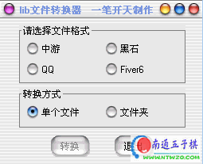

和一笔开天的书信往来[orc阅读器即将更新]
#1 <font color="red">和一笔开天的书信往来[orc阅读器即将更新]</font> 作者：有志青年 发表时间：2007-5-14 6:57:26
一笔开天的作品可以说是五子棋爱好者的必备工具了，现在流传最广的是下面两个软件。
中游、黑石、QQ、fiver6的棋谱转换成lib棋谱的工具


冒昧的发了一封邮件给一笔开天04年留下的email地址，竟收到了回信。征得一笔开天的同意，将信件内容展示给大家。
有志先生:
您好！
很高兴能收到你的邮件，说真的，没想到还有人在用我编的东西。
由于工作原因，我现在很少上网，基本与网络断开了联系，也有很久没下过棋了。至于几个小软件，也是由于用别人的软件，总有些地方不是很满意，才自己动手编个玩玩的，现在基本上没时间编写程序了。
另外，现在用orc的人还是很多吗？还是用04年那时侯的软件吗？呵呵，难道吕文哲老师也不更新吗？
很高兴认识你，你的建议也很好，软件的开发者最大的快乐就是得到别人的认可！本来早就没编这些东西了，这样吧，今年，等我放长假的时候，我会重新编过，希望能实现很多以前想到的东西。不过现在确实没空！
就这样吧，有机会再聊！
一笔开天 2007年5月
一笔开天： 您好！
今年的五一节真是喜事不断，5.1日在上海观摩名人赛并和顾炜老师畅谈五子棋普及事宜，今日打开邮箱又收到您的来信，非常高兴！
我是一名教师，目前在区教育局工作，我区今年以教育局的名义发文组织全区中小学的五子棋比赛，旨在推动五子棋的普及；而http://www.iwzq.com网站的建立，更是力求在网上最大限度的做到五子棋普及工作。
您开发的几个软件，很多人都一直在使用，那个格式转换工具，流传最广；而orc阅读器则是一个偶然的机会得到的，第一次使用就感到非常的上手。目前http://www.iwzq.com网站上提供下载的众多orc课件均推荐用户使用您的orc阅读器来浏览。
吕文哲老师的orc好久不更新了，且您创意的手动播放绝对是贴切用户的思路〔和自动播放相比〕。
在五子棋这条路上您是先行者，我是后辈，这条路上默默为大家服务的铺路石是那么的缺少，真心的期望您能继续为五子棋鞠躬尽瘁〔呵呵，严重了点。〕
望，保持联系！
另，您的来信，我想择选部分发在爱五子棋网站上，给orc阅读器使用者们看到我们一直在努力，望同意。
陈有志
有志先生:
您好！
今天打开邮箱,看到您的回信,听到现在的五子棋发展的形势那么好,下的人那么多,真是由衷感到高兴!您信中提到的关于信的事情,您随意好了,我不介意!
说起五子棋程序,那个ORC阅读器,我并不是很满意,有许多想法都没有实现.但是现在手上的任务比较多,抽不出空来编程序,只能放后一些了.而我对现在的网络五子棋状况也不是很清楚,用哪些软件,有何特点都不清楚了.希望今年能有时间再改进一些,也算对自己喜欢过的东西一个交待,了自己一点心愿!真希望我们也能出两个世界冠军,呵呵!!
另外,不要把我当什么老前辈,这我可不敢当,我们就当是朋友好了,有共同爱好的朋友!其实我的水平不高,最多能达到6级吧,呵呵,不过还是很喜欢这种棋!至于我呢,只是个普通的工程师而已,业余时间喜欢编点小程序!
好了,今天就写这么多吧!
一笔开天 5.12
#2 Re:和一笔开天的书信往来[orc阅读器即将更新] 作者：news 发表时间：2007-6-1 10:08:34
两位不同领域的高人相遇,
一定会有不同的火花!